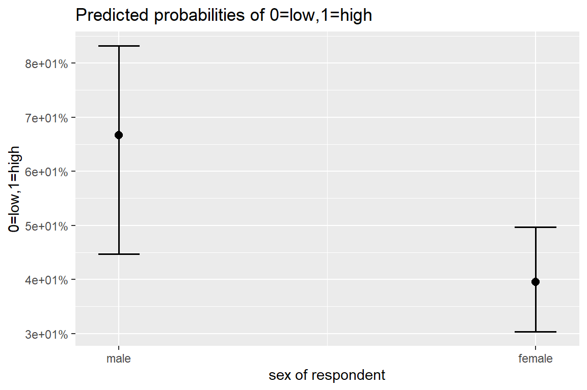

10 Logistic Regression - Ex: Depression (Hoffman)
library(tidyverse)
library(haven) # read in SPSS dataset
library(furniture) # nice table1() descriptives
library(stargazer) # display nice tables: summary & regression
library(texreg) # Convert Regression Output to LaTeX or HTML Tables
library(texreghelpr) # GITHUB: sarbearschartz/texreghelpr
library(psych) # contains some useful functions, like headTail
library(car) # Companion to Applied Regression
library(sjPlot) # Quick plots and tables for models
library(pscl) # psudo R-squared function
library(glue) # Interpreted String Literals
library(interactions) # interaction plots
library(sjPlot) # various plots
library(performance) # r-squared valuesThis dataset comes from John Hoffman’s textbook: Regression Models for Categorical, Count, and Related Variables: An Applied Approach (2004) Amazon link, 2014 edition
Chapter 3: Logistic and Probit Regression Models
Dataset: The following example uses the SPSS data set Depress.sav. The dependent variable of interest is a measure of life satisfaction, labeled satlife.
df_depress <- haven::read_spss("https://raw.githubusercontent.com/CEHS-research/data/master/Hoffmann_datasets/depress.sav") %>%
haven::as_factor()
tibble::glimpse(df_depress)Rows: 118
Columns: 14
$ id <dbl> 1, 2, 3, 4, 5, 6, 7, 8, 9, 10, 11, 12, 13, 14, 15, 16, 17, ...
$ age <dbl> 39, 41, 42, 30, 35, 44, 31, 39, 35, 33, 38, 31, 40, 44, 43,...
$ iq <dbl> 94, 89, 83, 99, 94, 90, 94, 87, NA, 92, 92, 94, 91, 86, 90,...
$ anxiety <fct> medium low, medium low, medium high, medium low, medium low...
$ depress <fct> medium, medium, high, medium, low, low, medium, medium, med...
$ sleep <fct> low, low, low, low, high, low, NA, low, low, low, high, low...
$ sex <fct> female, female, female, female, female, male, female, femal...
$ lifesat <fct> low, low, low, low, high, high, low, high, low, low, high, ...
$ weight <dbl> 4.9, 2.2, 4.0, -2.6, -0.3, 0.9, -1.5, 3.5, -1.2, 0.8, -1.9,...
$ satlife <dbl> 0, 0, 0, 0, 1, 1, 0, 1, 0, 0, 1, 1, 1, 0, 0, 1, 1, 0, 0, 1,...
$ male <dbl> 0, 0, 0, 0, 0, 1, 0, 0, 0, 0, 1, 1, 0, 0, 0, 0, 1, 0, 0, 0,...
$ sleep1 <dbl> 0, 0, 0, 0, 1, 0, NA, 0, 0, 0, 1, 0, 0, 0, 0, 1, 0, 0, 0, 0...
$ newiq <dbl> 2.21, -2.79, -8.79, 7.21, 2.21, -1.79, 2.21, -4.79, NA, 0.2...
$ newage <dbl> 1.5424, 3.5424, 4.5424, -7.4576, -2.4576, 6.5424, -6.4576, ...# A tibble: 9 x 14
id age iq anxiety depress sleep sex lifesat weight satlife male
<chr> <chr> <chr> <fct> <fct> <fct> <fct> <fct> <chr> <chr> <chr>
1 1 39 94 medium~ medium low fema~ low 4.9 0 0
2 2 41 89 medium~ medium low fema~ low 2.2 0 0
3 3 42 83 medium~ high low fema~ low 4 0 0
4 4 30 99 medium~ medium low fema~ low -2.6 0 0
5 ... ... ... <NA> <NA> <NA> <NA> <NA> ... ... ...
6 115 39 87 medium~ medium low male low <NA> 0 1
7 116 41 86 medium~ medium high male low -1 0 1
8 117 33 89 low low high male high 6.5 1 1
9 118 42 <NA> medium~ medium low fema~ low 4.9 0 0
# ... with 3 more variables: sleep1 <chr>, newiq <chr>, newage <chr> lifesat
satlife high low Sum
0 0 65 65
1 52 0 52
Sum 52 65 11710.1 Exploratory Data Analysis
Dependent Variable = satlife (numeric version) or lifesat (factor version)
10.1.1 Visualize
df_depress %>%
ggplot(aes(x = age,
y = satlife)) +
geom_count() +
geom_smooth(method = "lm") +
theme_bw() +
labs(x = "Age in Years",
y = "Life Satisfaction, numeric")
Figure 10.1: Hoffman’s Figure 2.3, top of page 46
df_depress %>%
ggplot(aes(x = age,
y = satlife)) +
geom_count() +
geom_smooth(method = "lm") +
theme_bw() +
labs(x = "Age in Years",
y = "Life Satisfaction, numeric") +
facet_grid(~ sex) +
theme(legend.position = "bottom")
10.1.2 Summary Table
Independent = sex
sex
lifesat male female Sum
high 14 38 52
low 7 58 65
Sum 21 96 117df_depress %>%
dplyr::group_by(sex) %>%
furniture::table1(lifesat,
total = TRUE,
caption = "Hoffman's EXAMPLE 3.1 Cross-Tabulation of Gender and Life Satisfaction (top page 50)",
output = "markdown")| Total | male | female | |
|---|---|---|---|
| n = 117 | n = 21 | n = 96 | |
| lifesat | |||
| high | 52 (44.4%) | 14 (66.7%) | 38 (39.6%) |
| low | 65 (55.6%) | 7 (33.3%) | 58 (60.4%) |
10.2 Calcualte: Probability, Odds, and Odds-Ratios
10.2.1 Marginal, over all the sample
Tally the number of participants happy and not happy (i.e. depressed).
.
0 1 Sum
65 52 117 10.2.1.1 Probability of being happy
\[ prob_{yes} = \frac{n_{yes}}{n_{total}} = \frac{n_{yes}}{n_{yes} + n_{no}} \]
[1] 0.444444410.2.2 Comparing by Sex
Cross-tabulate happiness (
satlife) withsex(male vs. female).
sex
satlife male female Sum
0 7 58 65
1 14 38 52
Sum 21 96 11710.2.2.1 Probability of being happy, by sex
Reference category = male
[1] 0.6666667Comparison Category = female
[1] 0.395833310.2.2.2 Odds of being happy, by sex
Reference category = male
[1] 2Comparison Category = female
[1] 0.655172410.2.2.3 Odds-Ratio for sex
\[ OR_{\text{female vs. male}} = \frac{odds_{female}}{odds_{male}} \]
[1] 0.3275862\[ OR_{\text{female vs. male}} = \frac{\frac{prob_{female}}{1 - prob_{female}}}{\frac{prob_{male}}{1 - prob_{male}}} \]
[1] 0.3275862\[ OR_{\text{female vs. male}} = \frac{\frac{n_{yes|female}}{n_{no|female}}}{\frac{n_{yes|male}}{n_{no|male}}} \]
[1] 0.327586210.3 Logisitc Regression Model 1: one IV
10.3.1 Fit the Unadjusted Model
fit_glm_1 <- glm(satlife ~ sex,
data = df_depress,
family = binomial(link = "logit"))
fit_glm_1 %>% summary() %>% coef() Estimate Std. Error z value Pr(>|z|)
(Intercept) 0.6931472 0.4629100 1.497369 0.13429719
sexfemale -1.1160040 0.5077822 -2.197800 0.02796333
Call:
glm(formula = satlife ~ sex, family = binomial(link = "logit"),
data = df_depress)
Deviance Residuals:
Min 1Q Median 3Q Max
-1.482 -1.004 -1.004 1.361 1.361
Coefficients:
Estimate Std. Error z value Pr(>|z|)
(Intercept) 0.6931 0.4629 1.497 0.134
sexfemale -1.1160 0.5078 -2.198 0.028 *
---
Signif. codes: 0 '***' 0.001 '**' 0.01 '*' 0.05 '.' 0.1 ' ' 1
(Dispersion parameter for binomial family taken to be 1)
Null deviance: 160.75 on 116 degrees of freedom
Residual deviance: 155.62 on 115 degrees of freedom
(1 observation deleted due to missingness)
AIC: 159.62
Number of Fisher Scoring iterations: 410.3.2 Tabulate Parameters
10.3.2.1 Logit Scale
texreg::knitreg(fit_glm_1,
caption = "Hoffman's EXAMPLE 3.2 A Loistic Regression Model of Gender and Life Satisfaction, top of page 51",
caption.above = TRUE,
single.row = TRUE,
digits = 4)| Model 1 | |
|---|---|
| (Intercept) | 0.6931 (0.4629) |
| sexfemale | -1.1160 (0.5078)* |
| AIC | 159.6205 |
| BIC | 165.1449 |
| Log Likelihood | -77.8103 |
| Deviance | 155.6205 |
| Num. obs. | 117 |
| p < 0.001; p < 0.01; p < 0.05 | |
10.3.2.2 Both Logit and Odds-ratio Scales
texreg::knitreg(list(fit_glm_1,
texreghelpr::extract_glm_exp(fit_glm_1)),
custom.model.names = c("b (SE)",
"OR [95 CI]"),
caption = "Hoffman's EXAMPLE 3.2 A Loistic Regression Model of Gender and Life Satisfaction, top of page 51",
caption.above = TRUE,
single.row = TRUE,
digits = 4,
ci.test = 1)| b (SE) | OR [95 CI] | |
|---|---|---|
| (Intercept) | 0.6931 (0.4629) | 2.0000 [0.8322; 5.2772] |
| sexfemale | -1.1160 (0.5078)* | 0.3276 [0.1148; 0.8625]* |
| AIC | 159.6205 | 159.6205 |
| BIC | 165.1449 | 165.1449 |
| Log Likelihood | -77.8103 | -77.8103 |
| Deviance | 155.6205 | 155.6205 |
| Num. obs. | 117 | 117 |
| p < 0.001; p < 0.01; p < 0.05 (or Null hypothesis value outside the confidence interval). | ||
10.3.3 Assess Model Fit
10.3.3.1 Likelihood Ratio Test (LRT, aka. Deviance Difference Test)
# A tibble: 2 x 5
Df Deviance AIC LRT `Pr(>Chi)`
<dbl> <dbl> <dbl> <dbl> <dbl>
1 NA 156. 160. NA NA
2 1 161. 163. 5.13 0.0235# A tibble: 1 x 11
Model Type AIC BIC R2_Tjur RMSE LOGLOSS SCORE_LOG SCORE_SPHERICAL PCP
<chr> <chr> <dbl> <dbl> <dbl> <dbl> <dbl> <dbl> <dbl> <dbl>
1 fit_~ glm 160. 165. 0.0437 1.15 0.665 -30.1 0.0550 0.528
# ... with 1 more variable: BF <dbl>10.3.3.2 R-squared “like” measures
$R2_Tjur
Tjur's R2
0.04375 # R2 for Generalized Linear Regression
R2: 0.032
adj. R2: 0.019Nagelkerke's R2
0.05742029 fitting null model for pseudo-r2 llh llhNull G2 McFadden r2ML r2CU
-77.81025523 -80.37450446 5.12849846 0.03190376 0.04288652 0.05742029 10.3.4 Plot Predicted Probabilitites
$sex
10.3.4.1 Logit scale
sex emmean SE df asymp.LCL asymp.UCL
male 0.693 0.463 Inf -0.214 1.6004
female -0.423 0.209 Inf -0.832 -0.0138
Results are given on the logit (not the response) scale.
Confidence level used: 0.95 contrast estimate SE df z.ratio p.value
male - female 1.12 0.508 Inf 2.198 0.0280
Results are given on the log odds ratio (not the response) scale. 10.3.4.2 Response Scale (probability)
sex prob SE df asymp.LCL asymp.UCL
male 0.667 0.1029 Inf 0.447 0.832
female 0.396 0.0499 Inf 0.303 0.497
Confidence level used: 0.95
Intervals are back-transformed from the logit scale contrast odds.ratio SE df z.ratio p.value
male / female 3.05 1.55 Inf 2.198 0.0280
Tests are performed on the log odds ratio scale 10.3.5 Interpretation
On average, two out of every three males is depressed, b = 0.667, odds = 1.95, 95% CI [1.58, 2.40].
Females have nearly a quarter lower odds of being depressed, compared to men, b = -0.27, OR = 0.77, 95% IC [0.61, 0.96], p = .028.
10.3.6 Diagnostics
10.3.6.1 Influential values
Influential values are extreme individual data points that can alter the quality of the logistic regression model.
The most extreme values in the data can be examined by visualizing the Cook’s distance values. Here we label the top 7 largest values:

Note that, not all outliers are influential observations. To check whether the data contains potential influential observations, the standardized residual error can be inspected. Data points with an absolute standardized residuals above 3 represent possible outliers and may deserve closer attention.
10.4 Logisitic Regression Model 2: many IV’s
10.4.1 Fit the Model
fit_glm_2 <- glm(satlife ~ sex + iq + age + weight,
data = df_depress,
family = binomial(link = "logit"))
fit_glm_2 %>% summary() %>% coef() Estimate Std. Error z value Pr(>|z|)
(Intercept) 9.02054236 6.01858970 1.4987801 0.13393069
sexfemale -1.27924381 0.55971456 -2.2855289 0.02228183
iq -0.07279837 0.05361036 -1.3579161 0.17449031
age -0.04112838 0.05250052 -0.7833900 0.43339814
weight -0.03768972 0.08885942 -0.4241499 0.6714564810.4.2 Tabulate Parameters
texreg::knitreg(list(fit_glm_2,
texreghelpr::extract_glm_exp(fit_glm_2)),
custom.model.names = c("b (SE)",
"OR [95 CI]"),
caption = "EXAMPLE 3.3 A Logistic Regression Model of Life Satisfaction with Multiple Independent Variables, middle of page 52",
caption.above = TRUE,
single.row = TRUE,
digits = 4,
ci.test = 1)| b (SE) | OR [95 CI] | |
|---|---|---|
| (Intercept) | 9.0205 (6.0186) | 8271.2619 [0.0854; 2077566352.1374] |
| sexfemale | -1.2792 (0.5597)* | 0.2782 [0.0870; 0.8060]* |
| iq | -0.0728 (0.0536) | 0.9298 [0.8327; 1.0304] |
| age | -0.0411 (0.0525) | 0.9597 [0.8635; 1.0627] |
| weight | -0.0377 (0.0889) | 0.9630 [0.8073; 1.1472] |
| AIC | 137.5217 | 137.5217 |
| BIC | 150.4973 | 150.4973 |
| Log Likelihood | -63.7609 | -63.7609 |
| Deviance | 127.5217 | 127.5217 |
| Num. obs. | 99 | 99 |
| p < 0.001; p < 0.01; p < 0.05 (or Null hypothesis value outside the confidence interval). | ||
10.4.3 Assess Model Fit
# A tibble: 5 x 5
Df Deviance AIC LRT `Pr(>Chi)`
<dbl> <dbl> <dbl> <dbl> <dbl>
1 NA 128. 138. NA NA
2 1 133. 141. 5.59 0.0180
3 1 129. 137. 1.91 0.167
4 1 128. 136. 0.621 0.431
5 1 128. 136. 0.180 0.671 10.4.4 Variance Explained
# A tibble: 1 x 11
Model Type AIC BIC R2_Tjur RMSE LOGLOSS SCORE_LOG SCORE_SPHERICAL PCP
<chr> <chr> <dbl> <dbl> <dbl> <dbl> <dbl> <dbl> <dbl> <dbl>
1 fit_~ glm 138. 150. 0.0753 1.13 0.644 -23.1 0.0220 0.548
# ... with 1 more variable: BF <dbl>10.4.5 Diagnostics
10.4.5.1 Multicollinearity
Multicollinearity corresponds to a situation where the data contain highly correlated predictor variables. Read more in Chapter (???)(multicollinearity).
Multicollinearity is an important issue in regression analysis and should be fixed by removing the concerned variables. It can be assessed using the R function vif() [car package], which computes the variance inflation factors:
sex iq age weight
1.011608 1.294334 1.418975 1.233364 As a rule of thumb, a VIF value that exceeds 5 or 10 indicates a problematic amount of collinearity. In our example, there is no collinearity: all variables have a value of VIF well below 5.
10.5 Compare Models
10.5.1 Refit to Complete Cases
Restrict the data to only participant that have all four of these predictors.
Refit Model 1 with only participant complete on all the predictors.
fit_glm_1_redo <- glm(satlife ~ sex,
data = df_depress_model)
fit_glm_2_redo <- glm(satlife ~ sex + iq + age + weight,
data = df_depress_model)texreg::knitreg(list(texreghelpr::extract_glm_exp(fit_glm_1_redo),
texreghelpr::extract_glm_exp(fit_glm_2_redo)),
custom.model.names = c("Single IV",
"Multiple IVs"),
caption.above = TRUE,
single.row = TRUE,
digits = 4,
ci.test = 1)| Single IV | Multiple IVs | |
|---|---|---|
| (Intercept) | 1.9477 [1.5562; 2.4377]* | 12.7108 [0.8969; 180.1414] |
| sexfemale | 0.7436 [0.5802; 0.9529]* | 0.7388 [0.5755; 0.9483]* |
| iq | 0.9837 [0.9606; 1.0074] | |
| age | 0.9908 [0.9677; 1.0144] | |
| weight | 0.9913 [0.9521; 1.0322] | |
| AIC | 141.9675 | 145.7895 |
| BIC | 149.7528 | 161.3602 |
| Log Likelihood | -67.9837 | -66.8948 |
| Deviance | 22.8889 | 22.3908 |
| Num. obs. | 99 | 99 |
| * Null hypothesis value outside the confidence interval. | ||
# A tibble: 2 x 5
`Resid. Df` `Resid. Dev` Df Deviance `Pr(>Chi)`
<dbl> <dbl> <dbl> <dbl> <dbl>
1 97 22.9 NA NA NA
2 94 22.4 3 0.498 0.554# A tibble: 2 x 8
Model Type AIC BIC R2_Nagelkerke RMSE BF Performance_Score
<chr> <chr> <dbl> <dbl> <dbl> <dbl> <dbl> <dbl>
1 fit_glm_1_redo glm 142. 150. 0.0599 0.481 1 0.6
2 fit_glm_2_redo glm 146. 161. 0.0827 0.476 0.00302 0.410.5.2 Interpretation
- Only sex is predictive of depression. There is no evidence IQ, age, or weight are associated with depression, all p’s > .16.